Uranium and energy
Energy consumption and electricity production are two different things, and both affect global warming. Renewables supply about 15 to 25% of the electricity of advanced nations and suit peak daytime demand. Most electricity is still made from coal, oil and gas, the "base load" supply. Uranium is useful because it is carbon-free and can supply base load. Demand is growing with population, living standards and data centres. slides 4, 7, 11 and 22
New reactor designs are smaller. Two 35 MW(e) small modular reactors (SMRs) in the Arctic power a city of about 100 000 people and can desalinate up to 240 000 m³ of water a day. Google expects its first SMR (with Kairos Power) by 2030. Micro reactors of up to about 10 MW(e) can be built in a factory and moved by truck, for remote towns and mine sites. Fusion is getting closer, with experiments now making more energy than it takes to ignite them. slides 16 to 20
Uranium prices spiked between 2006 and 2009, which drove exploration around the world. The price chart also marks the accidents at Three Mile Island (1979), Chernobyl (1986) and Fukushima. Total known and inferred resources are about 58 Mt U in 1782 deposits (UDEPO 2015): 11.8 Mt in 1663 conventional deposits and 45.3 Mt in 119 unconventional ones. Reasonably assured resources would last about 40 to 50 years in conventional reactors. The main producers have been Kazakhstan, Canada, Australia and Africa. slides 22 to 25
Radioactivity and radiometrics
All uranium on Earth formed before the solar system, in collisions of neutron stars. Natural uranium has three isotopes, all radioactive: ²³⁸U (99.27%, half-life 4.47 billion years), ²³⁵U (0.72%, 0.7 billion years) and ²³⁴U (0.0055%). They decay in steps, by alpha particles, beta particles and gamma rays, to stable ²⁰⁶Pb and ²⁰⁷Pb. Some daughters, ²²⁶Ra, ²²²Rn, ²¹⁴Bi, ²¹⁰Pb and ²¹⁰Po, matter in exploration. slides 27, 32 and 40
Gamma rays are the only radiation we can easily measure in routine exploration. A gamma-ray spectrometer counts three channels plus total count. The potassium channel is ⁴⁰K. The "uranium" channel is really ²¹⁴Bi, a daughter of uranium. The "thorium" channel is really ²⁰⁸Tl. slides 31 and 36
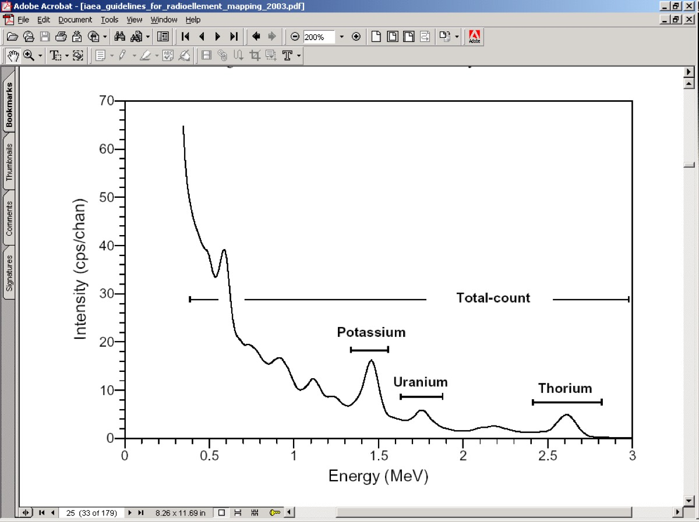
The daughters behave differently from uranium. Radon is a gas and blows away; radium is very insoluble as a sulphate in salty water. So after decay they separate from their uranium source and are no longer in . This is . You cannot work out uranium grade from gamma readings when the daughters have moved. Only a uranium assay gives the real grade. slide 37
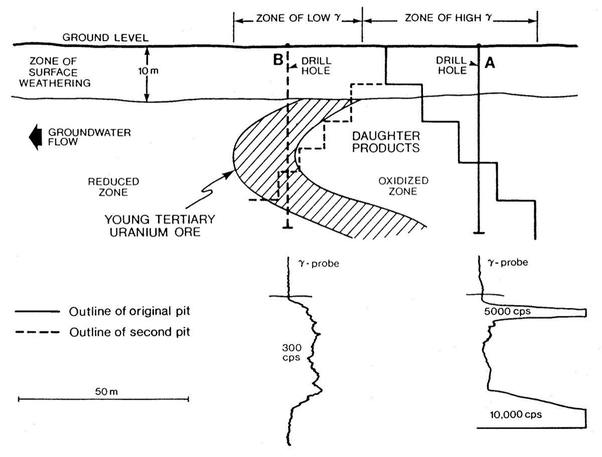
Hole A has the higher gamma reading. Which hole actually hit the ore, and why?
Show what I see
- Hole A, in the oxidised zone, shows a high gamma count (about 10 000 cps).
- Hole B, which goes through the curved ore body in the reduced zone, shows a lower count.
Hole B hit the uranium. The uranium moved on with the oxidised groundwater, but its insoluble daughters stayed behind in the oxidised zone and give off the gamma rays in hole A. A pit was dug in the wrong place because of this. slide 47
Oklo, in Gabon, was a natural nuclear reactor about 2 billion years ago. At that time ²³⁵U made up more than 3% of natural uranium, enough for fission. Today it is only 0.720% everywhere, but at Oklo it is 0.717%, because some ²³⁵U was "used up" by fission. A natural reactor cannot happen today. slide 38
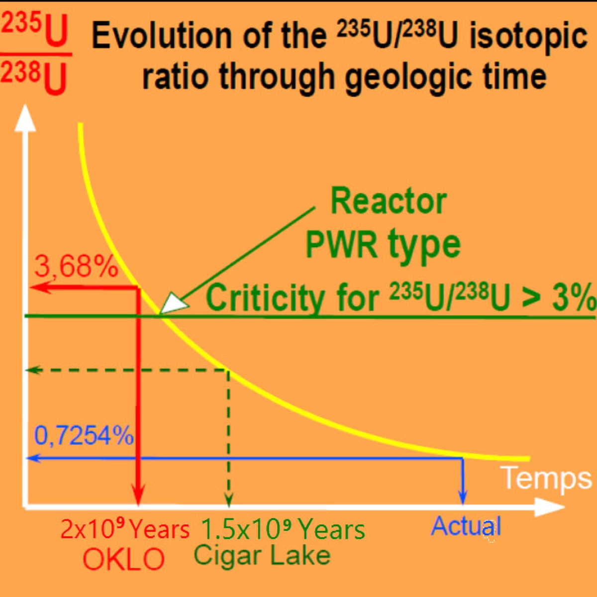
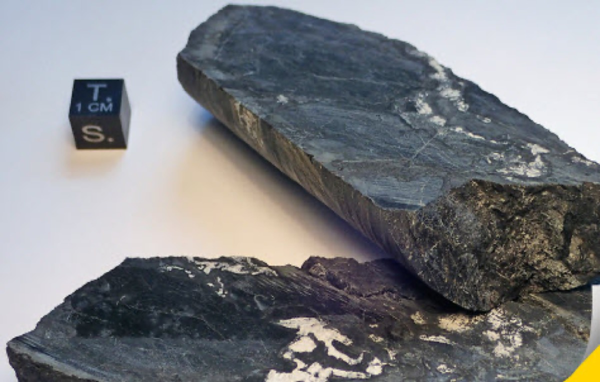
Read the spectrometer0 / 4
Uranium chemistry
Uranium (atomic number 92) is an actinide, but it behaves chemically more like Cr, Mo and W: it forms oxyanions. It is very dense (UO₂: 19.1 g/cm³) and occurs in almost all rock, soil and water at about 0.5 to 3 ppm, similar to Ag and Sn. It is not rare. slides 40 and 41
The key feature is that uranium is strongly : it is never found as a native metal or as a sulphide, but always with oxygen (oxide, silicate, phosphate, vanadate, carbonate). Only two valence states matter in nature: U⁴⁺ (uranous, reduced) and U⁶⁺ (uranyl, oxidised). slides 41 and 42
| U⁴⁺ (reduced) | U⁶⁺ (oxidised, uranyl UO₂²⁺) | |
|---|---|---|
| Solubility | Essentially insoluble | Very soluble in acid and alkaline water |
| Minerals | Uraninite, pitchblende, coffinite | Carnotite, autunite, uranophane (bright colours) |
| Where | Magmas, reduced sediments | Weathering zone, oxidised groundwater |
| Transport | Does not move | Moves as carbonate (most important), phosphate, silicate or vanadate complexes |
slides 44 to 46
In magmas, the large U⁴⁺ ion does not fit in normal silicate minerals, so it collects in the last fluids of a granite: in pegmatites, between grains, and in the cleavage of biotite. Mica-rich, fractionated granites and gneisses are the main source of mobile uranium. When they weather, U⁴⁺ oxidises to soluble U⁶⁺ and goes into solution. It precipitates again when it is reduced (by organic matter, but not petroleum), when its solubility is exceeded, or when it reacts with silicate, phosphate or vanadate. These processes are still active today along redox boundaries. slides 43 to 46
Moves or stays?0 / 5
- U is oxyphilic: always with oxygen, never a sulphide.
- U⁶⁺ (uranyl) is soluble and mobile, mainly as carbonate complexes; U⁴⁺ is insoluble.
- Ore forms where oxidised water carrying U⁶⁺ meets a reductant (organic matter, pyrite, graphite).
- The "U channel" is ²¹⁴Bi; disequilibrium means only assays give the true grade.
Uranium minerals
Primary minerals (reduced): (U₃O₈, the main ore mineral, khaki-green-brown to grey-black), (UO₂, black, cubic or octahedral) and coffinite (a uranium silicate). Secondary minerals in the weathered zone are brightly coloured: (bright yellow, K-U vanadate), tyuyamunite (yellow-green), (bright green, Ca-U phosphate) and uranophane (yellow, Ca-U silicate). Some complex oxides such as brannerite and davidite need very strong hot acid or alkali leaches, which is expensive. slides 1, 48 to 50
Name the uranium mineral0 / 4
- Bright yellow or green coatings on weathered rock suggest secondary uranium minerals: yellow carnotite or uranophane, green autunite.
- Black, dense, pitchy material in veins: pitchblende or uraninite, often with red hematite and fluorite.
- Uranium minerals are always oxygen-bearing; there is no uranium sulphide.
Uranium through time
There were three main episodes of uranium deposit formation: the earliest Proterozoic, the middle Proterozoic, and the Cretaceous to Recent. All deposits formed in a stable continental setting, not in the sea (except minor phosphate deposits). The link to oxygen is clear. Before about 2.2 Ga, with little oxygen, detrital uraninite could survive in river gravels, giving the quartz-pebble conglomerates. After oxygen rose, uranium could move in solution, giving the Proterozoic unconformity deposits. After plants spread on land, organic matter could reduce uranium in sandstones, giving the roll fronts. slide 51
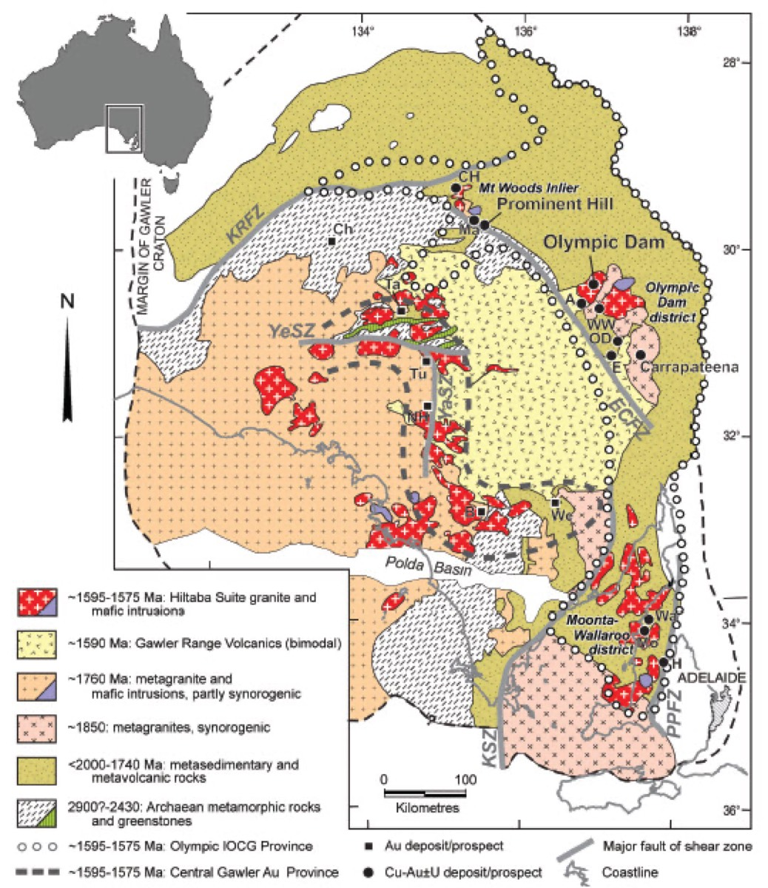
| Deposit type | Share of world resources | Example |
|---|---|---|
| Unconformity | ~33% (outside former centrally planned economies) | Athabasca, Alligator Rivers |
| Sandstone (roll front, tabular) | ~18% | Kazakhstan, Beverley |
| Quartz-pebble conglomerate | ~13% | Elliot Lake, Witwatersrand |
| Vein | ~9% | Jáchymov, Shinkolobwe |
| Surficial (calcrete) | ~4% | Yeelirrie, Langer Heinrich |
| Breccia complex (IOCG) | Olympic Dam alone | Olympic Dam |
slides 55, 61 and 106 (with slide notes)
Olympic Dam
Olympic Dam, in South Australia, is the world's largest economic uranium deposit and holds about 66% of Australia's uranium reserves plus resources, but its uranium is a by-product of copper and gold mining. The latest resource is more than 10 billion tonnes at 0.82% Cu, 0.31 g/t Au, 0.26 kg/t U₃O₈ and 1.5 g/t Ag, plus REE (400 to 600 ppm), containing about 2.5 Mt of uranium. It is a hematite-rich granite breccia complex in the Gawler Craton, under about 300 m of flat-lying sediments of the Stuart Shelf. It formed at about 1595 to 1575 Ma, with the Hiltaba Suite intrusions. The central core is barren hematite-quartz breccia with diatremes. The breccias probably formed in a near-surface crater complex, where water met magma explosively. slides 55, 56 and 59
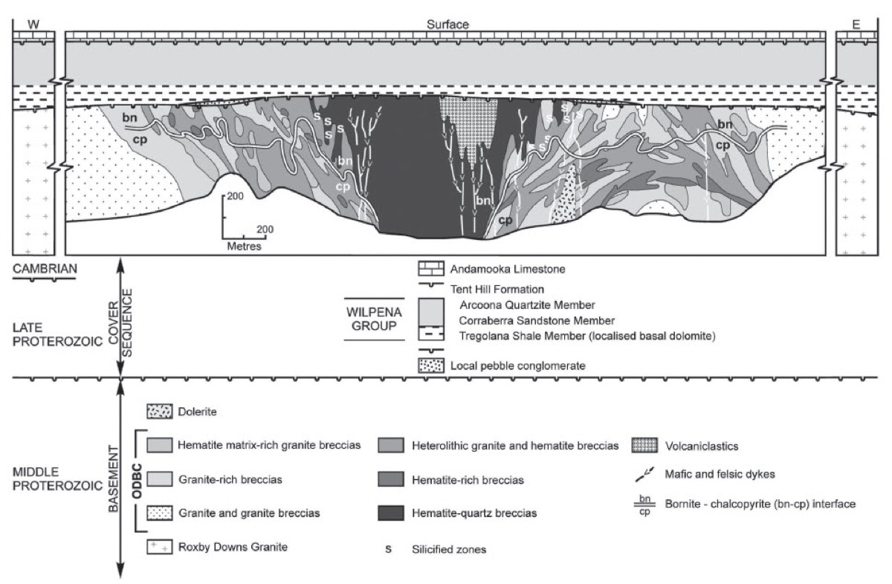
The uranium (uraninite, with less coffinite and brannerite) is very fine-grained and comes with the copper sulphides (bornite, chalcocite, chalcopyrite). Bastnäsite and florencite carry the REE. Hematite, quartz, sericite and fluorite are the main gangue. Compare it with Lecture 19, where Olympic Dam's REE go to the waste dump. slides 59 and 60 slide notes
Unconformity deposits
are the most important economic class. They are Proterozoic, in intracratonic basins, at or close to a major unconformity between faulted, brecciated metasediments below and younger, little-deformed Proterozoic sandstones above. The ore is uraninite and pitchblende. The main districts are the Athabasca Basin (Saskatchewan, Canada) and, in Australia, the Alligator Rivers region (Ranger, Jabiluka, Nabarlek, Koongarra) in the Pine Creek Geosyncline, and Kintyre in the Rudall River area (WA). slide 61
In the Athabasca, the deposits are below, across and just above the unconformity, and the richest are at or just above it: Cigar Lake averages almost 20% U₃O₈, with zones over 50%. At Alligator Rivers, the known deposits are below the unconformity and much lower grade. Exploration there has been restricted since the late 1970s, so deep, high-grade deposits above the unconformity, as in Canada, may still be waiting. slide 61
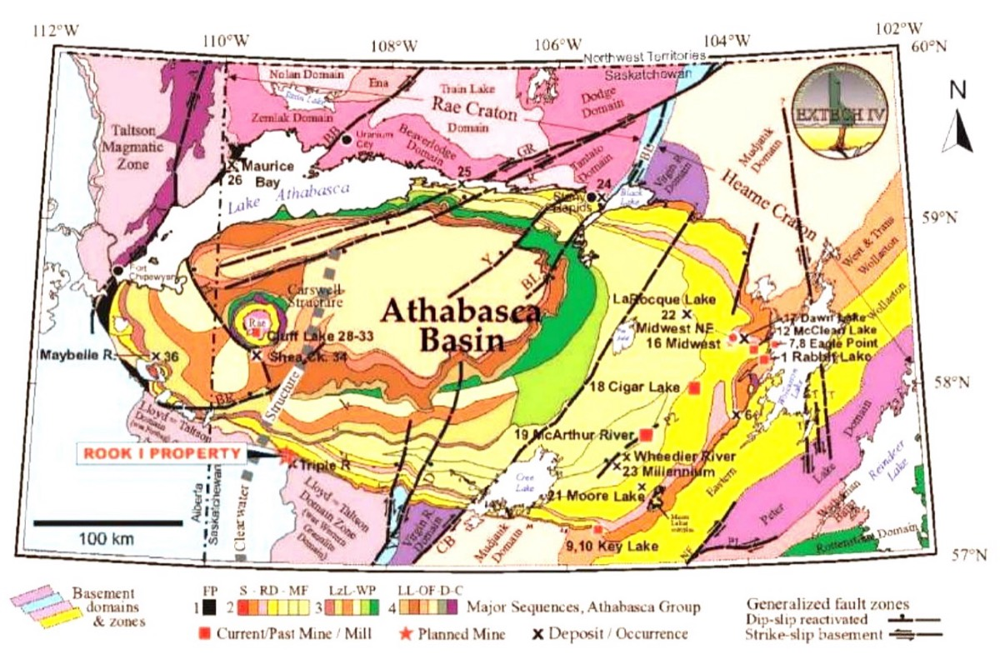
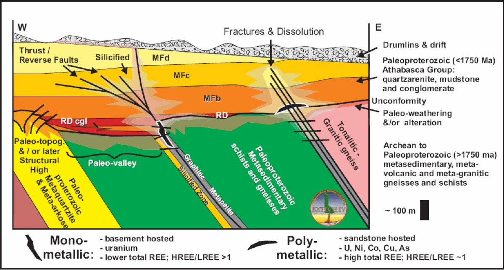
How they form: basin brines flow through the porous sandstone and around the unconformity (basin dewatering). They carry oxidised uranium. A reductant is needed, usually graphitic units in the basement, which also show as electrical conductors. Reactivated faults focus the flow, and the ore pods are small (often on a 100 m scale) but very rich. slides 63 to 65
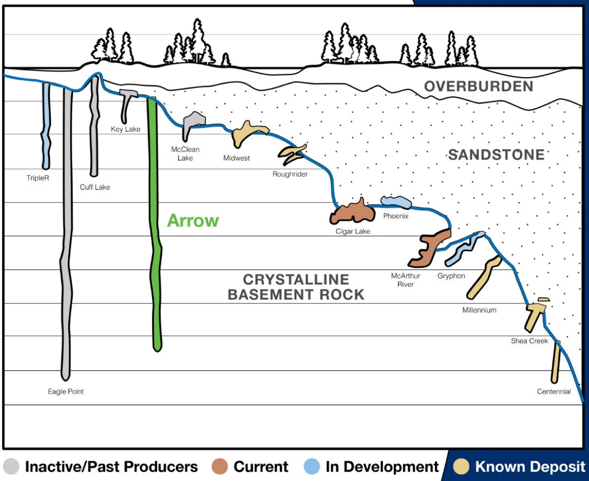
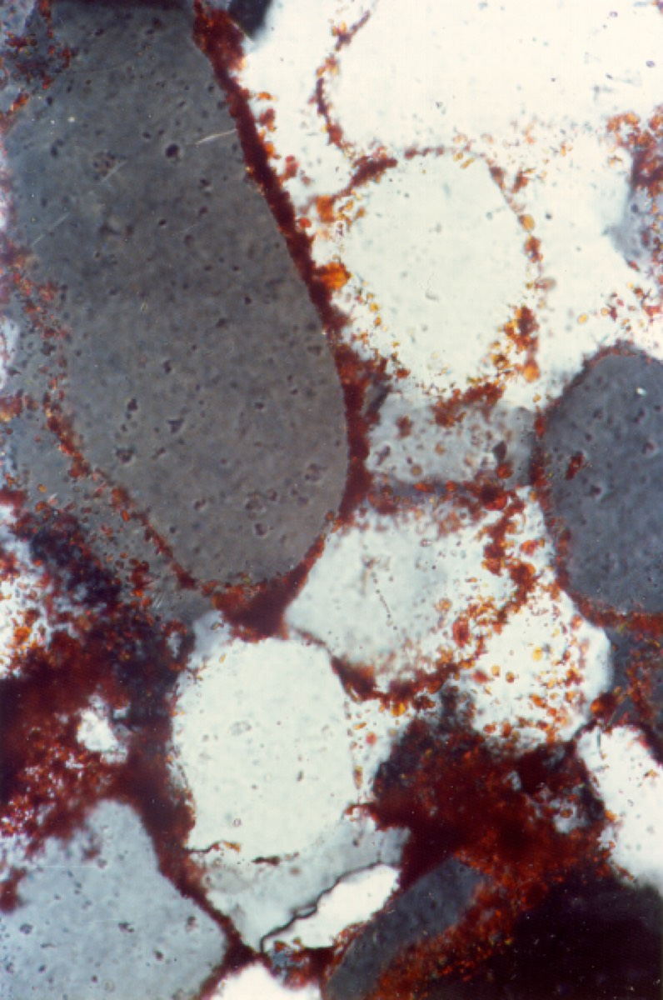
Look at the edges of the quartz grains. What has happened to this sandstone?
Show what I see
- Rounded quartz grains with thin red-brown hematite rims.
- A silica overprint (new quartz) around and between some grains.
This is alteration from the Caramel deposit in Arnhem Land: hematite rims on the grains and a silica overprint, from fluids moving through the sandstone above the unconformity. Deeper in the same hole, the rocks show chlorite-hematite alteration and cataclased (crushed) sandstone and basement near the fault. slides 68 to 70
Roll fronts and sandstone deposits
deposits are usually Carboniferous to present. They form in old river systems inside continents, in sand and clay sequences. The reduced facies is critical: organic debris, pyrite and plant material. Uranium weathered from a source rock travels in oxidised groundwater along an aquifer, and is deposited where the water meets the reduced sandstone (a pH and redox barrier). At the back of the front, uranium is oxidised and dissolved again, and it is re-deposited at the front's reducing edge, so the ore body moves slowly downstream and takes a crescent (C) shape. Examples are in the SW USA, South Australia and Kazakhstan. slides 76 and 80
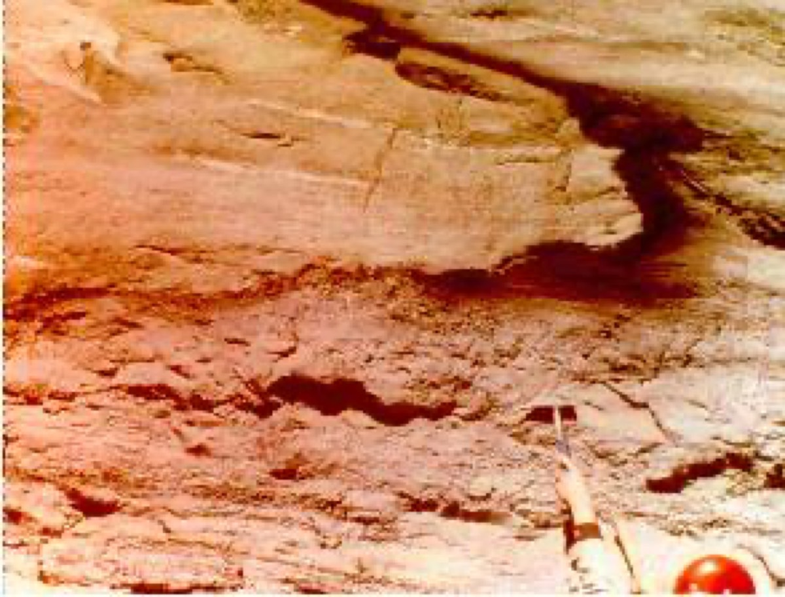
Find the boundary between the two colours. Which side is oxidised, and where would the uranium be?
Show what I see
- Red, orange and brown sandstone on one side; grey sandstone on the other; a curved boundary between them.
The red-brown side is oxidised (hematite and goethite, clays from leaching). The grey side is reduced (carbon and pyrite). The uranium (uraninite, coffinite) is concentrated along the curved boundary, on its reduced side. slides 80 to 82
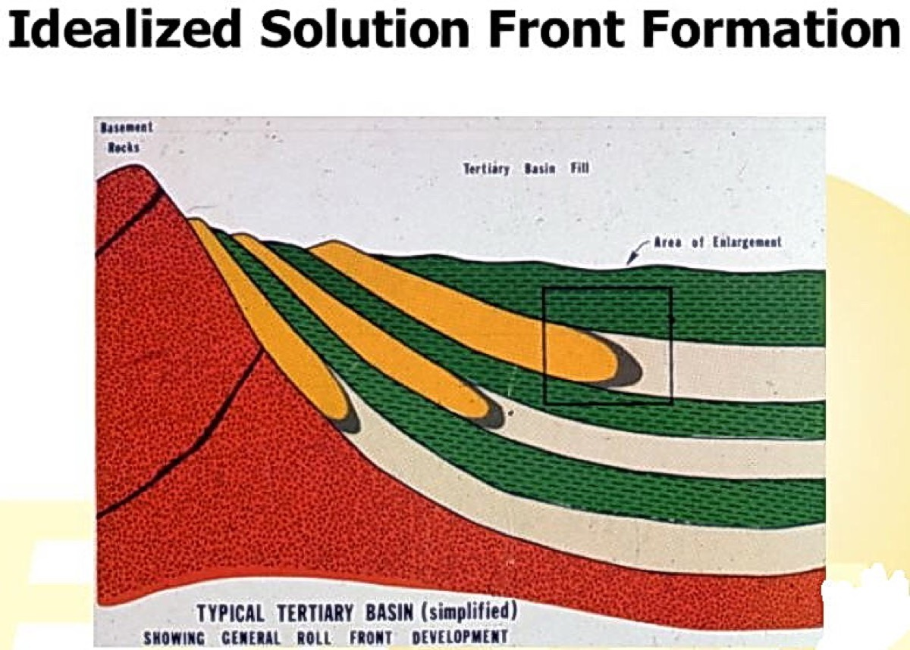
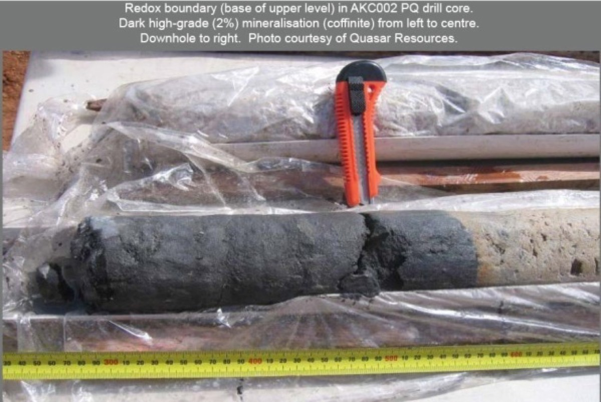
In Kazakhstan, sandstones dip gently to the north-west with up to four mineralised units; the ore is at 20 m depth in the north and 500 m in the south-west. In South Australia, the Frome Embayment deposits (Beverley, Honeymoon) are in palaeochannels fed by uranium from the hills. At Mulga Rock (WA), uranium sits in peat layers in a buried palaeochannel, inside plant cells and wood, mostly as coffinite. The slide notes say coal is not a good place for uranium. Sandstone deposits are about 18% of world resources, usually 0.05 to 0.4% U₃O₈, and are now mostly mined by in situ leaching. slides 79, 83 to 89, 106 slide notes
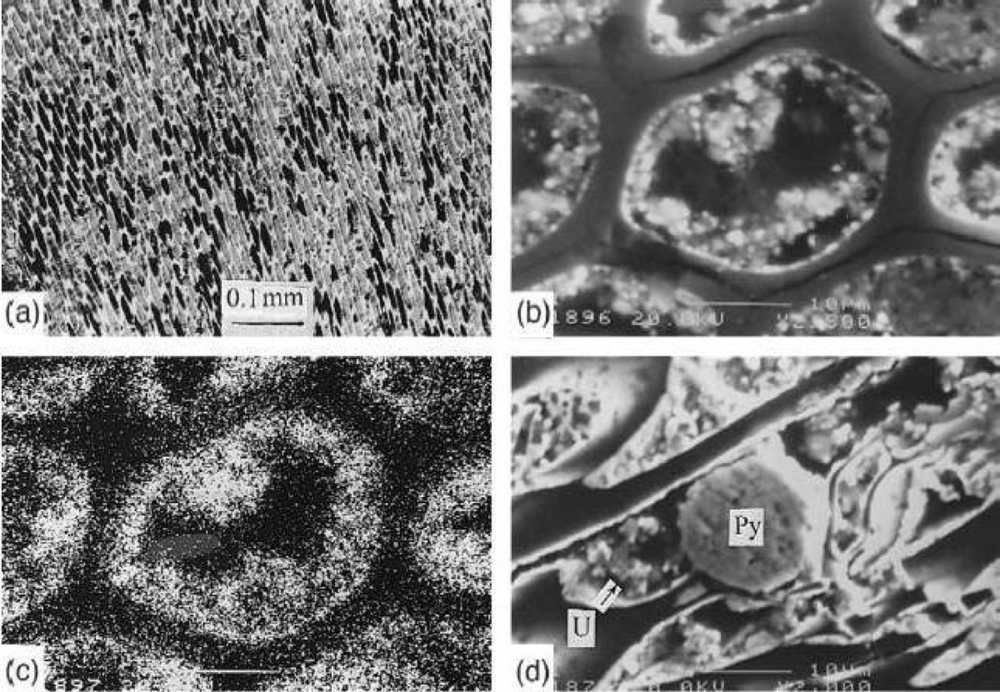
Calcrete deposits
Superficial (surficial) deposits are young (Tertiary to Recent) uranium concentrations near the surface, in sand and clay cemented by calcite, dolomite, gypsum, iron oxide or halite. Calcrete deposits are the largest. They formed where uranium-rich granites weathered deeply in a semi-arid to arid climate. Examples are Yeelirrie (one of the world's largest), Lake Way, Centipede, Thatcher Soak and Lake Maitland in WA, along old drainage channels and playa lakes over the Yilgarn Craton, and Langer Heinrich in Namibia. They are about 4% of world resources and 5% of Australia's. slides 92 and 96
The ore mineral is carnotite. Uranium comes from the granite, vanadium from weathered greenstones, and potassium from the groundwater. Carnotite precipitates in a narrow window near neutral pH, during evaporation or where groundwaters mix. Grades are low (100 to 1500 ppm), the bodies are thin, shallow and spread over square kilometres, and the high carbonate means the ore cannot easily be acid-leached. Langer Heinrich: about 30 Mt at 0.07% U₃O₈. slides 98, 103 and 104
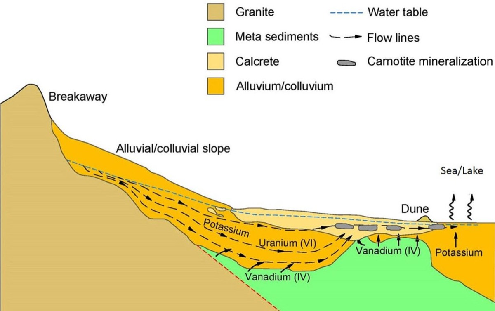
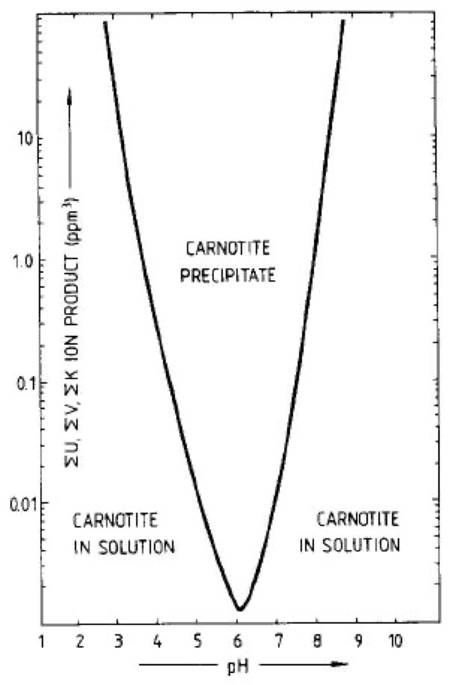
Other styles and mining
- Quartz-pebble conglomerates (~13%): detrital uraninite from before oxygen, often a by-product of gold (Witwatersrand, Elliot Lake), as low as 0.01% U₃O₈.
- Volcanic: in acid volcanic rocks along faults, with Mo and F; fluorine carries the uranium and breaks down to fluorite. Ben Lomond and Maureen (Queensland).
- Intrusive: alaskite, granite and pegmatite (Rössing, Namibia; Radium Hill, SA, with davidite).
- Metamorphic and metasomatite: Mary Kathleen near Mount Isa (U with REE, mined 1958 to 1963 and 1976 to 1982); Valhalla and Skal.
- Veins (~9%): Jáchymov (Czech Republic), Shinkolobwe (DRC).
slides 106 to 110
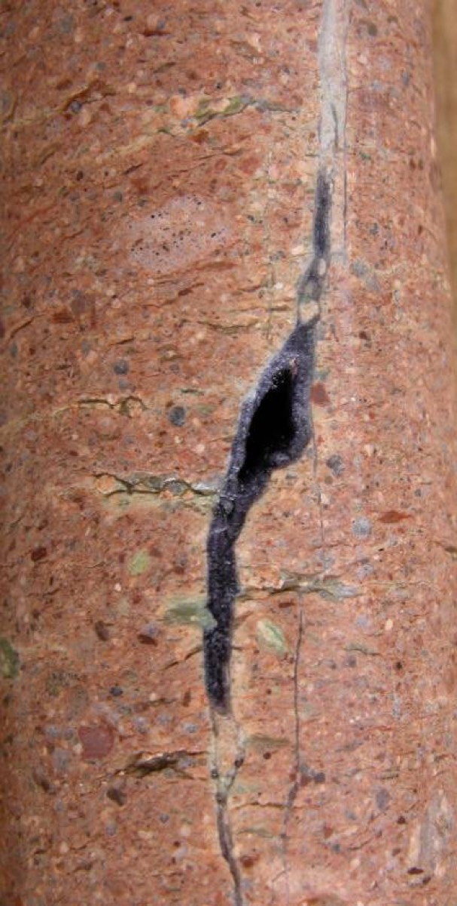
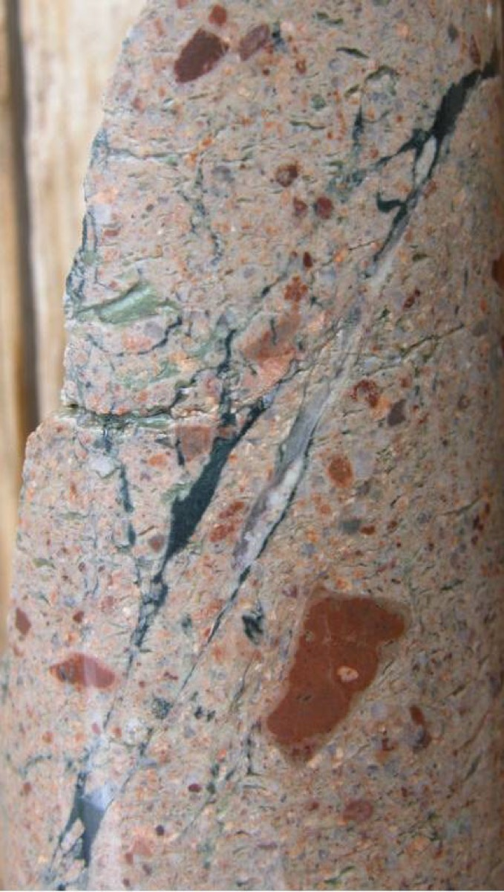
Mining. Hard rock ore is crushed and leached with sulphuric acid; the uranium is concentrated by solvent extraction or ion exchange, precipitated as bright yellow "", and converted to U₃O₈ for transport. In situ leaching (ISL), used at Beverley, pumps acid (or an alkaline leach where there is carbonate) down injection wells into a uranium-bearing aquifer and pumps the solution back up. Advantages: no workers at the ore, no broken rock, almost no tailings, small footprint, and smaller, lower-grade ore bodies can be mined. slides 111 to 116
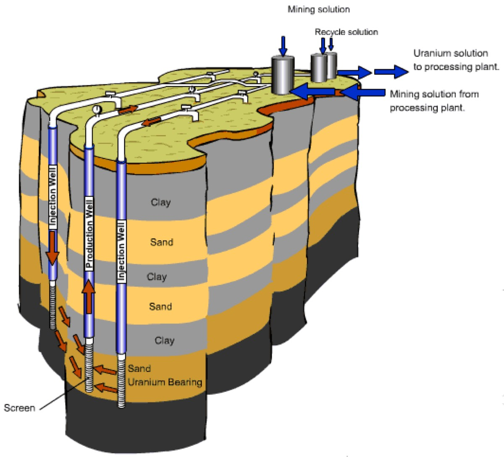
Putting it together
Classify the deposit0 / 6
- Isotopes: ²³⁸U 99.27% (4.47 Ga), ²³⁵U 0.72% (0.7 Ga); Oklo natural reactor ~2 Ga.
- Radiometric channels: K (⁴⁰K), "U" (²¹⁴Bi), "Th" (²⁰⁸Tl); disequilibrium.
- Types: unconformity (Athabasca, Alligator Rivers, graphite reductant), roll front (redox front in sandstone), calcrete (carnotite), QPC (pre-oxygen), Olympic Dam (by-product).
- Three ages: earliest Proterozoic, middle Proterozoic, Cretaceous to Recent.
Self-test
Answer each question out loud or on paper before you open it. If your answer was right, claim the ounces.
Glossary and flashcards
These are terms that the lecture expects you to know, or only explains briefly. Tap a dotted word in the text to see its meaning.
Flashcards
Where this goes next
Lecture 18 covers the critical elements, where uranium-bearing ash beds appear again. The same redox idea controls the Kupferschiefer copper of Lecture 16 and the iron and manganese of Lecture 21.